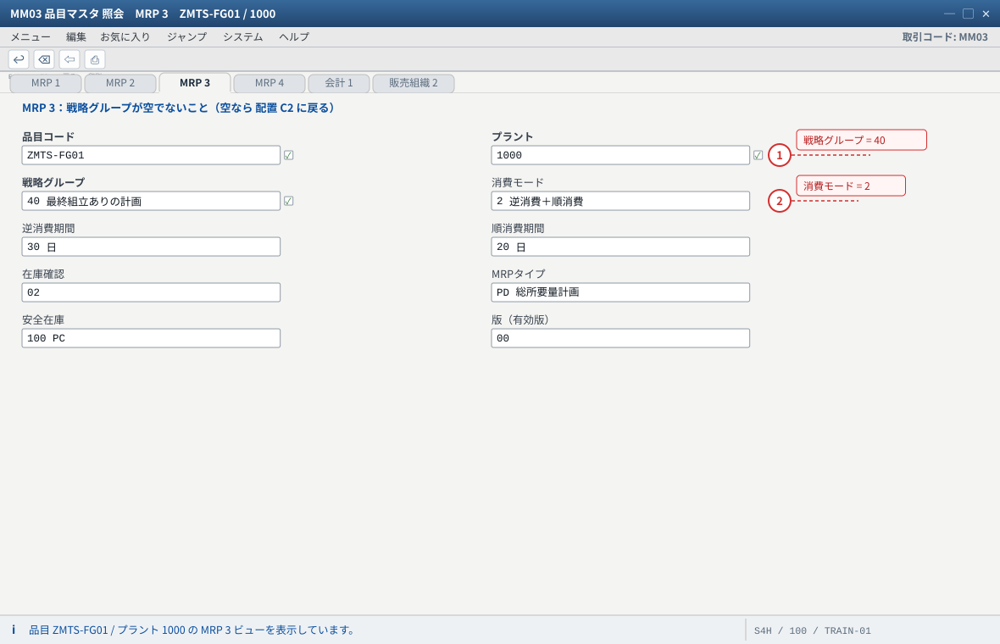
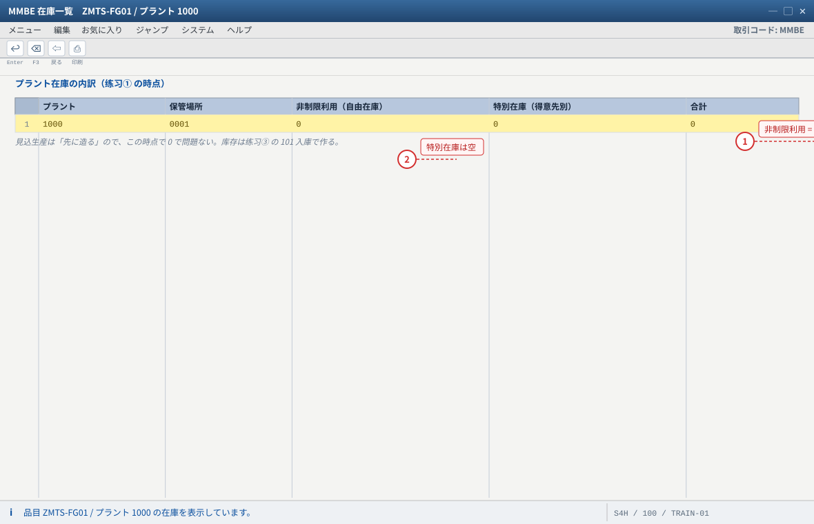
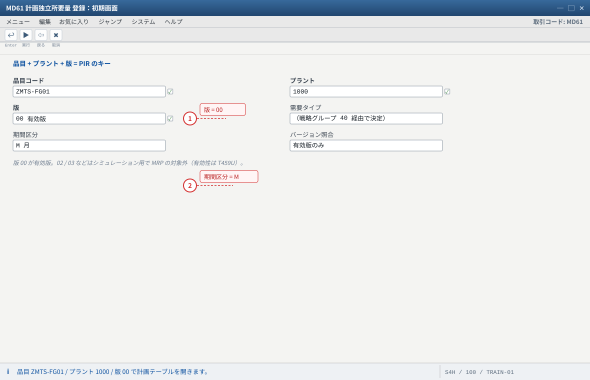
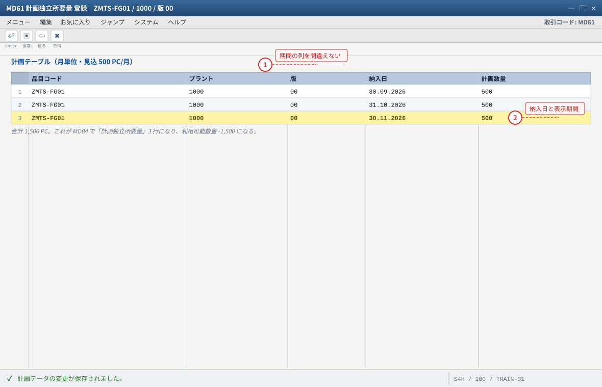
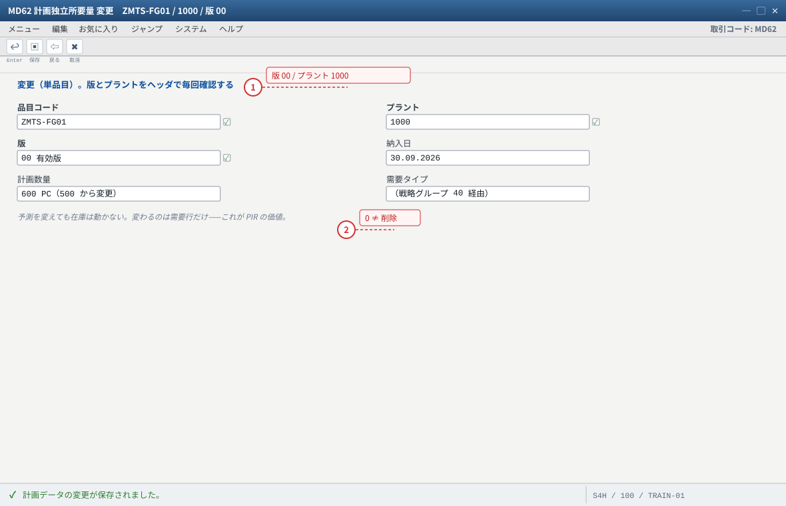
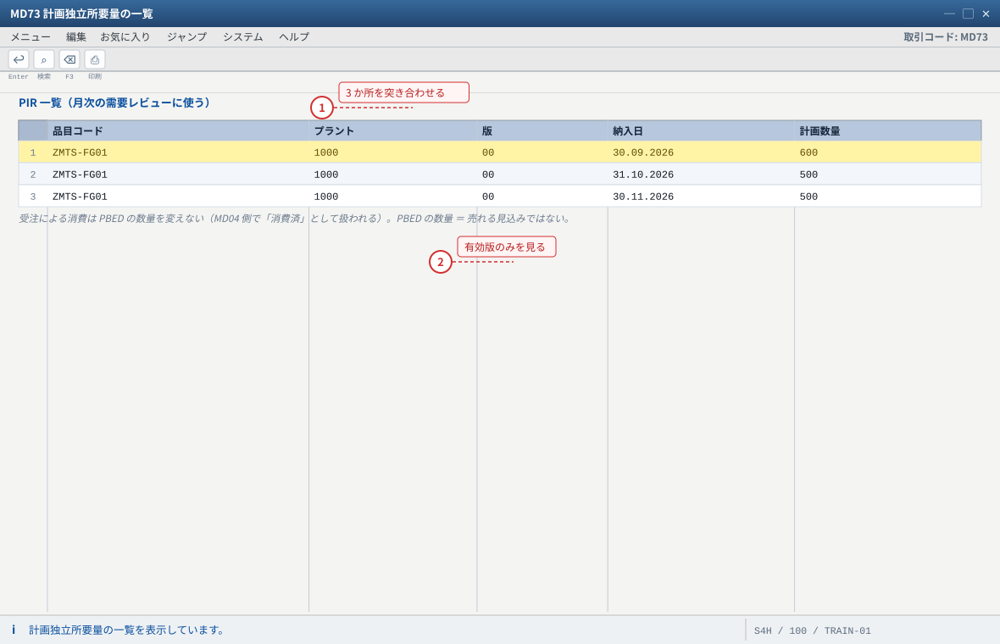
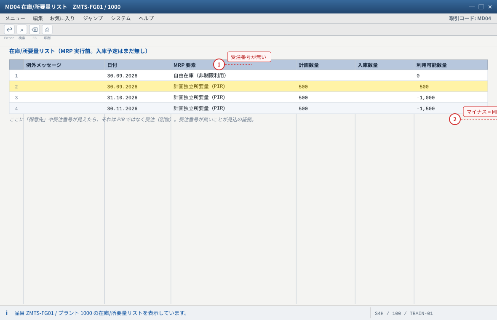

练习① 需要予測と PIR（見込生産の起点）
.png 放进 assets/gui/ 后执行 python3 tools/swap_gui_images.py <site> --apply 即可一键替换。本练习只做一件事：把「预计卖 500 PC/月」这句人话，变成系统能算的需求。做完你应该能在 MD04 里指着那行「計画独立所要量」说：这就是見込生産的需求源，它不带受注番号。
MM03
500 / 500 / 500
版 00
受注番号なし
500 → 600
1-1 前提确认（品目と戦略グループ）
PIR 是品目＋プラント＋版的需求。所以做之前先确认这三件事存在，尤其是 MRP3 の戦略グループ——它决定「PIR 会不会被受注消费」，是后面练习④ 能不能成立的前提。
| 確認項目 | 値（本教材） | 見る画面 / 表 |
|---|---|---|
| 品目 / プラント / 版 | ZMTS-FG01 / 1000 / 版 00（有効版） | MM03・MD61 の初期画面 |
| MRP タイプ | PD（MRP 対象） | MM03 MRP1 / MARC-DISMM |
| 戦略グループ | 40（最終組立ありの計画 = 受注が PIR を消費） | MM03 MRP3 / MARC-STRGR / OPPT |
| 消費モード / 消費期間 | 2（逆＋順）/ 逆 30 日・順 20 日 | MM03 MRP3 / MARC-VRMOD・VINT1・VINT2 |
| 安全在庫 | 100 PC | MM03 MRP2 / MARC-EISBE |
| 現在の自由在庫 | （例）0 PC（练习③ の 101 入庫で 500 になる） | MMBE / MB52 |
MM03→ZMTS-FG01/ プラント1000→ MRP3 を開き、戦略グループが空でないことを確認（空なら 配置 C2 に戻る）。MMBEで自由在庫と受注在庫（特別在庫）を確認。この時点でどちらも 0 でも問題ない（見込生産は「先に造る」ので、库存は练习③ で作る）。MD04を開いて空の在庫/所要量リストを見ておく（前後比較のため）。
MD61 の初期画面で品目やプラントが選択できない → プラント在庫ビュー（MARC）未登録。MD04 で「品目マスタがありません」 → 同じ原因。
- 1 戦略グループ 40 = 受注が PIR を消費する。空だと练习④ の「消費」が起きない
- 2 消費モード 2・逆 30 / 順 20。遠い未来の受注が当月の PIR を食べるかどうかはここ次第
自システムでの確認：SE16N: MARC → STRGR（戦略グループ）/ VRMOD・VINT1・VINT2（消費）/ DISMM（MRPタイプ）/ EISBE（安全在庫）。

- 1 入庫先が「非制限利用」＝ 自由在庫。ここが MTS の証拠（MTO なら特別在庫に受注番号付きで入る）
- 2 特別在庫（得意先別）は最後まで空のまま。MSKA に何も入らないことを確認する
自システムでの確認：MB52（プラント横断）と SE16N: MARD（LABST = 非制限在庫）。対照で MTO は MSKA に受注番号付きで入ります。
1-2 PIR の登録（MD61）
| 入力項目 | 値 | 説明 |
|---|---|---|
| 品目 / プラント | ZMTS-FG01 / 1000 | — |
| 版（Version） | 00 | 有効版。02/03 等はシミュレーション用（MRP 対象外）。版の有効性は T459U |
| 需要タイプ / 計画タイプ | 標準（例 LSF/VSF 系。環境で確認） | 戦略グループ経由で決まる所要量タイプが使われる |
| 期間区分 | M（月）または W（週） | 练习用に月単位（例：本月・翌月・翌々月） |
| 数量 | 各月 500 PC | 本教材の「見込 500 PC/月」 |
| 納入日 | 各月の末日（或は月初） | MRP の着手計算の基準日。環境の計量単位に合わせる |
MD61→ 品目ZMTS-FG01/ プラント1000/ 版00→ 実行。- 計画テーブル（各列 = 期間）で、対象期間のセルに
500を入力。3 か月分（例：本月・翌月・翌々月）。 - 「計画データの変更」メッセージを確認 → 保存。
MD04を開き直し、MRP 要素に「計画独立所要量」が並ぶことを確認（数量 500 が 3 行）。
MD04 の行：計画独立所要量 500 PC（受注番号なし）。ここに「得意先」や受注番号が見えたら、それは PIR ではなく受注（別物）。② 一覧：
MD73（品目横断の PIR 一覧）。③ 表：
SE16N: PBED（キーに品目・プラント・版 VERID）→ PDATU（納入日）/ PLNMG（数量）/ VERID（版）。ヘッダは PBIM。④ 有効版：
SE16N: T459U。00 以外で登録 → MRP は 00 しか見ないので計画手配が生まれない（症状：MD04 に何も出ない）。② 期間のずれ（1 年前の日付など）→ MD04 の範囲外で見えない。MD61 の日付と MD04 の表示期間を必ず見る。
③ 「明細ではなく見込数量に直接入力」など画面の列を間違える → 保存はできるが MD04 に出ない。列ヘッダを確認。
MD04 → 設定/日付）。—— 見込生産では「预测的视界（planning horizon）」が实物在庫と同格に効く、という感覚をここで掴む。
- 1 版は必ず 00。00 以外で登録すると MRP が見ず、MD04 に何も出ない
- 2 期間区分は M（月）。W（週）や日で入れると数量の意味が変わる
自システムでの確認：品目・プラントが選べないときはプラント在庫ビュー（MARC）未登録を疑う。有効版は SE16N: T459U。

- 1 各月 500 PC = 月次の見込数量。期間の列を間違えると保存はできても MD04 に出ない
- 2 納入日が MD04 の表示期間外だと見えない。MD61 の日付と MD04 の期間を必ず突き合わせる
自システムでの確認：MD04 の「計画独立所要量」、MD73 の一覧、SE16N: PBED（PDATU / PLNMG / VERID）。列名は版により異なります。
1-3 PIR の変更と版（MD62 / MD73）
预测是会变的（客户需求更新、销售改了预估）。改预测不该动库存，只改需求行——这就是 PIR 的价值。
| 操作 | T-code | 要点 |
|---|---|---|
| 変更（単品目） | MD62 | 品目 + プラント + 版 00 → 数量を変更（例 本月 500 → 600）→ 保存 |
| 一覧・照会 | MD73 | 複数品目・複数プラントの PIR をまとめて見る（月次の需要レビューに使う） |
| 照会（単品目） | MD63 | 変更しない確認だけ |
MD62→ 品目ZMTS-FG01/ プラント1000/ 版00→ 本月の 500 を600に変更 → 保存。MD04で数量が 600 に変わっていることを確認（MRP はまだ跑っていないので計画手配は古いまま——これが「MRP を再実行する理由」）。MD73で一覧を開き、品目・品目グループ単位で需要を俯瞰する。
MD04 の計画独立所要量行（600）、SE16N: PBED の PLNMG、MD73 の一覧の 3 つが一致すること。注意：受注による消費は
PBED の数量を変えません（表示側で「消費済」として扱われる）。したがって「PBED の数量＝売れる見込み＋まだ食べられていない分」ではありません。练习④ で体感します。00 以外）或は別プラントを編集している。ヘッダを毎回見る。② 「削除」と「0 にする」を混同：0 にすると需求行は残り数量 0（MRP は何もしない）。消すなら行削除。
00 と版 01 に別々の数量（例 600 / 300）を入れ、MD04 にどちらが出るかを確かめる。（答：有効版 00 のみ。版の有効性は T459U と MD61 の版照合画面で確認できる。）
- 1 変更が反映されないときは別の版・別プラントを編集している。ヘッダを毎回見る
- 2 「削除」と「0 にする」は違う。0 にすると需要行は残って数量 0 になる
自システムでの確認：MD04 で 600 に変わっていること（MRP はまだ未実行なので計画手配は古いまま = MRP を再実行する理由）。

- 1 MD04 / MD73 / SE16N: PBED の 3 つが一致することを確認する
- 2 版 00 以外（01 など）は MRP の対象外。照合は T459U
自システムでの確認：MD73 は複数品目・複数プラントをまとめて見られます。列構成は版本により異なる場合があります。
1-4 MD04 で独立所要量を確認（本练习的核心）
MD04（在庫/所要量リスト）是見込生産的仪表盘。练习① 只要求你会读这一行：
MD04 の行（例）
── 在庫 ─────────────────────────
自由在庫（利用可能） 0 PC
── 所要量 ───────────────────────
計画独立所要量 (PIR) 500 PC ← ★ 受注番号なし = 見込の証拠
計画独立所要量 (PIR) 500 PC
計画独立所要量 (PIR) 500 PC
── 入庫予定 ─────────────────────
（まだ無し。练习② で計画手配がここに並ぶ）
─────────────────────────────
利用可能数量 -1,500 PC ← 需求に対して供給が足りない状態
MD04→ZMTS-FG01/ プラント1000→ 明細行を上から順に読む。- 「計画独立所要量」の行をダブルクリック → MRP 要素の明細（版・需要タイプ・納入日）。ここに受注番号や得意先が出てこないことを確認。
- 「利用可能数量」がマイナス = MRP が補うべき量。このマイナスを消すのが练习② の仕事。
- 行の並び（日付順）と、MD04 の「設定」で表示期間を広げる方法を覚える。
MD04 の行と、MD73／SE16N: PBED の数量が一致すること。MRP 要素の種別名（「計画独立所要量」「得意先所要量」「計画手配」など）はシステム言語で変わるので、要素の内容（受注番号の有無）で判断するのが確実。
ND。② 数量が想定と違う → 別の期間（日/週/月単位の換算）で見ている。MD61 の単位と MD04 の日付を突き合わせる。
- 1 受注番号も得意先も無い = 見込（PIR）の需要。行をダブルクリックすると版・需要タイプ・納入日が見える
- 2 利用可能数量 -1,500 = 需要に対して供給が足りない。このマイナスを消すのが练习② の仕事
自システムでの確認：MD73 / SE16N: PBED の数量と一致すること。要素名（「計画独立所要量」等）はシステム言語で変わるため、受注番号の有無で判断するのが確実です。
1-5 需要予測の作り方（発展：ここが MTS の「一番人間的な部分」）
SAP 里的 PIR 只是「预测的容器」，预测本身怎么来才是見込生産的业务核心。现场常见三种做法，教学上按成熟度排序：
| やり方 | 中身 | 向いている場面 |
|---|---|---|
| ① 手入力・Excel 转记 | 销售/企画做 Excel → 用 MD61 或批量上传（LSMW / 程序）投入 | 品种少、预测按月的量产线（本教材的场景） |
| ② 统计预测 + 调整 | 用历史销量做统计预测（SAP 的预测功能 / 外部工具），人再修 | 需求有季节性或趋势 |
| ③ 计划系统联动（IBP 等） | 需求计划系统 → PIR/需求接口 → MRP | 多工厂、多层级、需要 S&OP 闭环 |
MD61 の計画タイプ/需要タイプにどんな値が選べるかを F4 で見る（環境によっては統計予測（SAP の Forecast）と連動する項目がある）。Cloud では Fiori アプリ「Manage Planned Independent Requirements」が入口（C16）。
さらに：预测错了会怎样？（库存堆积 vs 缺品）——这题的答案在 练习⑤ 的欠品/安全在庫切れ章节。
期待结果汇总（本练习做完时的系统状态）
| # | 期待结果 | 確認方法 |
|---|---|---|
| 1 | ZMTS-FG01 に版 00 の PIR が 3 行（各 500 PC、変更後は 600 PC） | MD73・SE16N: PBED |
| 2 | MD04 に「計画独立所要量」が並び、受注番号は無い | MD04 明細 |
| 3 | 利用可能数量がマイナス（= MRP の出番待ち） | MD04 最下行 |
| 4 | 自由在庫・受注在庫はまだ 0（見込生産は库存をここで作る） | MMBE |
| 5 | 戦略グループ 40 と消費モード 2 が品目に入っている（练习④ の前提） | MM03 MRP3 |
つまずきと対処（本练习版）
| 症状 | 根因の候補 | 確認手順 |
|---|---|---|
MD61 に品目/プラントが出ない | プラント在庫ビュー未登録（MARC 無し） | MM03 プラント在庫 → 無ければ MM01 でビュー追加 |
登録したが MD04 に出ない | 版が 00 でない / 納入日が表示期間外 | SE16N: T459U と PBED-VERID、MD04 の期間設定 |
| MRP を跑らせても計画手配が出ない | MRP タイプが ND（計画なし） | MM03 MRP1 → PD に変更（C2） |
| 数量が半分/倍になっている | 期間単位（日/週/月）の取り違え | MD61 の単位表示と MD04 の日付 |
| 受注を入れたのに PIR の数量が変わらない | 正常（消費 ≠ 消減） | MD04 の消費済数量と PBED を比較（概念 第 2 节） |
验收（完成基准）
MD61でZMTS-FG01/ プラント1000/ 版00に 3 か月分の PIR を登録し、保存できた。MD73の一覧で自分の登録が確認できる。MD04の「計画独立所要量」行を開き、受注番号がないことを自分の目で確認した。MD62で数量を変更し、MD04に反映された（MRP はまだ未実行であることも説明できる）。- 品目 MRP3 の戦略グループ（
40）と消費モード（2）をMM03で読み上げられる。 - 「消費」と「消減」の違いを、
PBEDの数量が変わらないことを例に説明できる。 - 版
00以外を登録しても MRP は使わない、と理由付きで説明できる。
PBIM/PBED/PBHI・T459U・REQUIREMENTS_REDUCTION）。消費モード 4 種と逆/順消費期間：LeanX / SAP Datasheet（
MARC-VRMOD/VINT1/VINT2 の値 1〜4）。戦略グループと所要量タイプの対応：SAP Tribal Knowledge SAP Planning Strategies。PIR の登録手顺（版 00 = 有効版、期間 M/W）：SAP Learning / SAP Community の MD61 解説。Cloud 側の入口は Fiori「Manage Planned Independent Requirements」（SAP Best Practices のテストスクリプト）